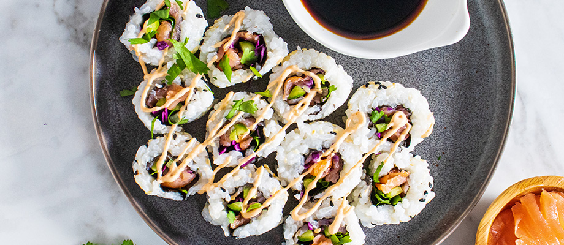

Smoked Salmon Sushi

Description
Salmon sushi rolls are surprisingly easy to make at home! You just need a good salmon sushi recipe — and that's where we come in.
Ingredients
- Sushi rice
- Rice wine vinegar
- Seaweed
- Wasabi paste
- Smoked Salmon
- Cucumber
- Avocado
Steps
- Soak and cook the rice, then mix in the vinegar and cool in an even layer on a plate.
- Assemble the sushi rolls.
- Roll the sushi tightly and cut into eight pieces.
Homepage